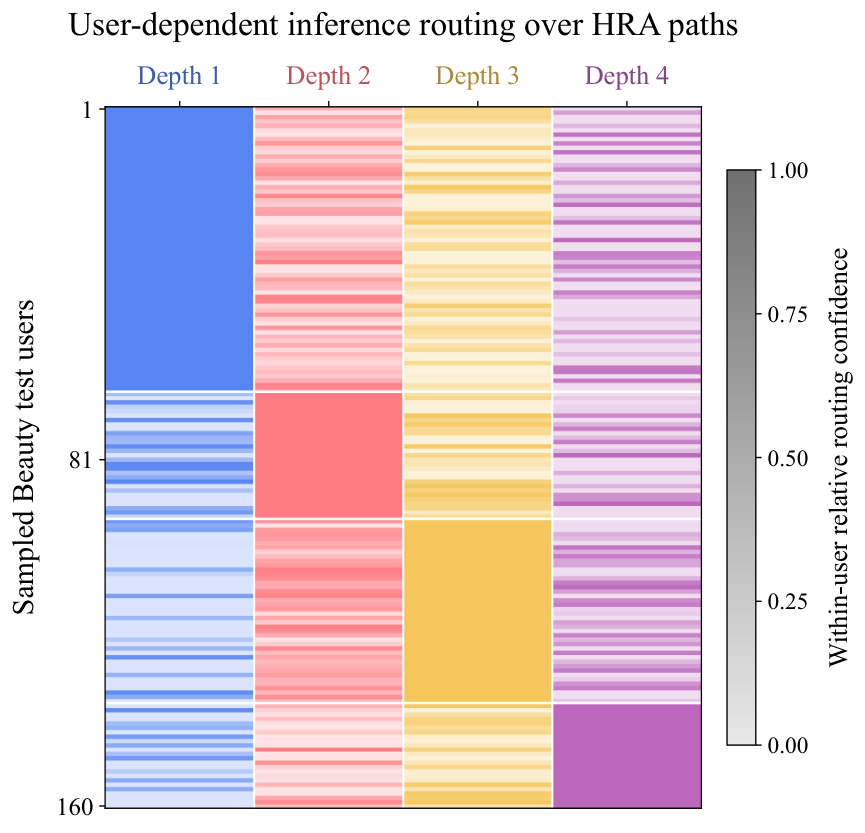
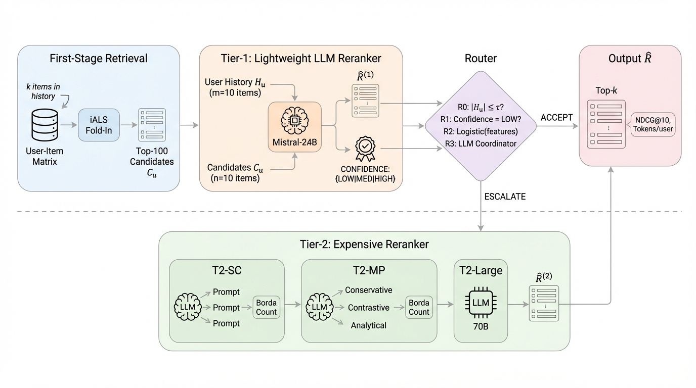
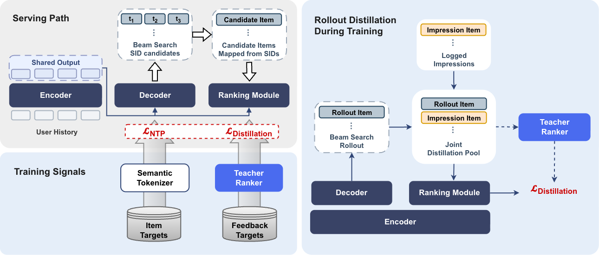

Contents · 10 sections
1What problem is it solving?2The overall pipeline3Thinking tokens: one reads everything, one reads the recent items4Nested adapter paths: different correction depths for different users5How a path is chosen in training versus at inference6Training in three stages7Experiments: how much it gains, and where8Where I think it falls short9How a recommendation team could try it10VerdictSHARE
Teams doing SID-based generative recommendation should read this one: it patches two concrete weak spots in TIGER-style models, and neither changes the SID codebook, both keep one shared vocabulary projection, and no extra models are added. The first patch comes before generation. The model gets two extra "thinking tokens": one reads only the user's full history, the other reads only the last 5 items, so a newly emerging interest is not buried under a pile of old behavior. The second patch comes during generation. Before the decoder's output vector reaches the vocabulary projection, it passes through a small set of adapters of different depths; each user takes exactly one path, chosen by the model's confidence at the first SID position. The paper calls the whole method MV-Thinker. On Amazon Instruments, with LETTER (a generative recommender that also encodes collaborative signals into SIDs) as the backbone, H@5 rises from 0.0854 to 0.0906, against 0.0882 for the strongest baseline. The share of distinct SIDs covered by the top 20 recommendations rises from 19.56% for TIGER to 25.50%. The thinking tokens decide which part of the history to look at; the adapter paths decide how to turn that into a specific product variant. The cost is a more involved three-stage training recipe. The public datasets used have average histories of only 8 to 10 items, far shorter than in production.
What problem is it solving?
SID-based generative recommendation has two problems. The first is that recent interests are easily diluted by the whole history.
The paper's appendix has an illustrative case. A user's earlier interactions were guitar strings, straps and tuners; recently they switched to an e-drum kit and a drum throne, then Zildjian drumsticks three times in a row. Put the whole history into one sequence and these recent events are easily diluted by the guitar records. TIGER's top recommendation for this user is in fact a guitar tuner, and the real next item, a pair of drumsticks, ranks outside the top 20. The full MV-Thinker's top recommendation is Zildjian 5B wood-tip sticks, and the real next item ranks 3rd.
| Model (Case I of the paper's appendix Table 5) | Top-1 recommendation | Rank of the real next item |
|---|---|---|
| TIGER | Guitar tuner | Outside top 20 |
| Without the per-view history reading module (MVT) | Guitar strings | Outside top 20 |
| Without the adapter-path module (HRA) | Zildjian 5A drumsticks | 6th |
| Full MV-Thinker | Zildjian 5B wood-tip sticks | 3rd |
The version without MVT (the per-view history reading module) still recommends guitar accessories; this case suggests that reading the history per view helps pick up the recent shift toward drums. The version without HRA (the adapter-path module) finds the right category but ranks the target lower among similar variants, which leads to the second problem. How the two modules work is explained below.
The second problem is that all users share one output transformation, and it sits at the very last step of generation. At each SID position the decoder outputs a vector, which is multiplied by one shared vocabulary projection to get next-code probabilities. Every user shares this one transformation. Yet some users only need the right category, while others need fine distinctions inside a category, down to string gauge, and one shared transformation struggles to serve both.
The overall pipeline

The backbone is a T5-style encoder–decoder with hidden size 128 and 4 layers. One recommendation runs in this order:
- The encoder reads the SIDs of every item in the user's history and outputs a vector per position.
- Two thinking tokens read from the full history and from the last 5 items respectively, producing two vectors that sit at the front of the decoder input. This step is called MVT (Multi-View Temporal Thinking) and runs once per user.
- The decoder generates the SID codes one by one. Each position's output vector first goes through one adapter path and then through the shared vocabulary projection. This step is called HRA (Hierarchical Residual Adaptation).
- Beam search generates the output, restricted at every step to SID prefixes that actually exist in the catalog, and the SIDs are mapped back to items.
Thinking tokens: one reads everything, one reads the recent items
The thinking tokens are two new special tokens, <think_1> and <think_2>. They do not correspond to any item; each has a learnable embedding shared by all users. Their job is to gather useful information from the history before any SID is generated.
Concretely, the embedding of <think_1> acts as a query and uses its own cross-attention to read the encoder outputs over the full history. The embedding of <think_2> uses a separate cross-attention that reads only the encoder outputs for the last items, with in the paper. What is read is multiplied by a learnable scale and added back to the original embedding (LayerNorm omitted below):
Here is the thinking token's original embedding, is the encoder output visible to this view, and is the scale. Intuitively, the query itself is the same for every user; only after reading does carry this user's information.
Why two independent readers? If the two tokens shared one reader, what they read would tend to blend together. If you simply concatenated the encodings of the two history spans, the longer full history would overwhelm the last few items. The recent view is cut at whole-item boundaries, so an item's SID codes are never split in half. Note also that the encoder runs over the whole history, so the output vectors of the last 5 items already carry context from earlier history. "Reads only the recent items" limits which positions <think_2> can attend to; it does not make the encoder see only those 5 items.
The two resulting vectors go at the start of the decoder input, in the order "start token, full-history vector, recent-history vector, SID codes generated so far". Every later code the decoder generates can attend to these two vectors. The original path stays in place: the decoder still reads the encoder output for the whole history, and the two vectors are an extra input on top of it.
Nested adapter paths: different correction depths for different users
HRA has 4 small adapters, each a two-layer network that projects down, applies GELU, and projects back up. To give different users corrections of different depth, they are chained into 4 paths: path 1 uses only the first adapter, path 2 uses the first and second, and path 4 uses all four. After each adapter, its output is multiplied by a fixed small coefficient and added back to the current vector. Finally the accumulated correction is divided by the path depth, so deep paths do not correct much more than shallow ones.
A worked example you can do in your head (illustrative, with the paper's ). Suppose one dimension of the decoder output is 1.0, and on path 2 the first adapter outputs 0.5 and the second outputs 0.5. The first step gives 1.0 + 0.2×0.5 = 1.1, the second gives 1.1 + 0.2×0.5 = 1.2. The accumulated correction of 0.2 divided by depth 2 gives a final value of 1.1.
All four corrected vectors are multiplied by the same vocabulary projection, so they predict the same set of SID codes and differ only in how deeply they correct. Compared with a mixture of experts, deeper paths here reuse the shallower adapters, so the HRA part adds only 4 small adapters.
How a path is chosen in training versus at inference
Training and inference choose paths on different grounds, so this section keeps them apart.
During training the model sees the target item's SID. For each example, all 4 paths compute their cross-entropy over the supervised positions, which are mainly the codes of the target SID. Paths with lower loss get a higher chance of being picked; the probabilities are a softmax over the negative losses (temperature 1.0). These sampling probabilities pass no gradient themselves. One path is then sampled with them, and the main cross-entropy update comes only from that path's loss. The paper calls this roulette training. Sampling rather than always taking the best path gives every path a chance to be trained.
When a deep path is sampled, the outputs of the shallower adapters still take part in the computation but pass no gradient back. So, for the cross-entropy term, only the last of this path's adapters is updated, while the backbone or readers are still updated as usual. That way, training the third adapter does not overwrite the correction the first one has already learned. To stop training from always picking a few paths early on, the authors also add a balancing term. It recomputes the same softmax over negative losses, this time keeping the gradient, and uses those probabilities: the further each path's average probability in a batch drifts from 1/4, the larger the penalty. This term's gradient flows through the losses of all 4 paths, so paths that were not sampled receive it too. But within each path the earlier adapters' outputs still pass no gradient back, so on each path the only adapter it can change is the last one.
At inference there is no target SID. At the first SID position the model runs all 4 paths, looks at each path's log-probability for its single most likely code, and picks the path with the highest value. All of this user's remaining codes, and every beam-search branch, then stay on that path. The choice is made only once, at the first position, because switching paths at every position would make the corrections inconsistent, while running a full beam search on all 4 paths would be too expensive. Hoot says

Illustrative numbers. Training samples one of 4 paths by loss; inference picks one by the highest log prob at the first code and keeps it.
Source
paper §3.3.2 roulette training and §3.3.3 confidence-based inference; numbers are illustrativeChoosing a path at inference uses only the user's history and the model's own confidence, never the true next item. The true item is used only at evaluation time to compute hit rates.
Training in three stages
The authors do not train everything from scratch at once. They use three stages:
- Stage 0: train a plain encoder–decoder with the standard per-token cross-entropy, so it learns to generate valid SIDs from a history.
- Stage 1: add the two thinking tokens and HRA. The two thinking tokens are new special tokens, and in this stage the model also has to predict them at their positions, just as it predicts SID codes. The backbone, thinking tokens and adapters are updated together.
- Stage 2: add the separate readers for the two views and freeze the backbone. The thinking tokens no longer count in the loss; only the readers, thinking tokens and adapters are updated.
Freezing the backbone keeps Stage 0's SID-generation ability intact.
Experiments: how much it gains, and where
Evaluation uses three Amazon categories (Instruments, Beauty, Games) and Yelp. Each user's last interaction is held out for testing and the second-to-last for validation. At evaluation time the true next item is used to compute H@K and N@K. There are two kinds of comparison. One is discriminative models such as SASRec. The other adds recent improvements on top of a TIGER or LETTER backbone. Two of them change history modeling: CARE (a few rounds of latent reasoning over the history before generation) and GEMs (separate streams for recent, mid-term and long-term history). Three change the generation process: APAO (adjusts how SID prefixes are optimized in training), Latte (latent tokens that give each item several decoding paths) and IBA (allocates compute steps to SID positions by information gain).
| Dataset and backbone | Backbone H@5 | Strongest baseline H@5 | MV-Thinker H@5 | MV-Thinker N@5 |
|---|---|---|---|---|
| Instruments, TIGER | 0.0853 | 0.0875 (APAO) | 0.0882 | 0.0751 |
| Instruments, LETTER | 0.0854 | 0.0882 (GEMs) | 0.0906 | 0.0801 |
| Beauty, LETTER | 0.0379 | 0.0426 (GEMs) | 0.0436 | 0.0291 |
| Yelp, TIGER | 0.0216 | 0.0247 (CARE) | 0.0251 | 0.0163 |
MV-Thinker is best on every metric, for both backbones and all four datasets. Against the strongest baseline, though, the margin is small, usually in the third decimal place. The strongest baseline changes by dataset: on Beauty and Games it is often the history-side CARE or GEMs, on Instruments often the generation-side APAO, Latte or IBA. MV-Thinker beats both kinds.
The coverage result is more interesting. On Instruments the authors pool the distinct SIDs that appear in any test user's top 20: TIGER covers 19.56% of the catalog, MV-Thinker on the TIGER backbone 25.50%, with a higher hit rate at the same time. In other words, it recommends more widely without paying for it in accuracy.
Path choice really does vary across users. The authors sampled 160 Beauty test users and looked at the depth chosen at inference. The shallowest path is the most common, at 40.6%; the deepest is the least common, yet still 15.0%. So all four paths are actually used, rather than collapsing into everyone taking the same one.

Ablations are run on Instruments and Beauty. Removing MVT or removing HRA lowers both H@5 and N@5, but both variants still beat TIGER. Removing HRA costs more H@5, removing MVT costs more N@5. Keeping only the full history beats keeping only the recent history, and both fall short of using the two together. The authors also trained versions that use a single path of fixed depth, one each for depths 1 to 3. On Instruments, all of them are worse than the full nested paths on all 6 metrics, and no single fixed depth is best on every metric.
Where I think it falls short
First, the absolute gains are tiny. On Instruments with the TIGER backbone, H@5 beats the strongest baseline, APAO, by only 0.0007. The paper averages three random seeds and runs a significance test, but a gain of this size may well be invisible in an online A/B test.
Second, the histories are all short. Average history length in the four datasets is only 8.32 to 10.40, and a recent view of 5 items already takes up about half of it. New interests getting buried under old behavior is a problem mainly in online settings with hundreds or thousands of events per user, and none of the four datasets comes close to that length.
Third, the model is tiny and the training pipeline gets longer. The backbone has only 4 layers and 128 dimensions, much smaller than typical production generative recommenders, and the adapters' gain may shrink in a larger model. Three-stage training also lengthens the pipeline, and each stage needs its own choice of what to freeze and what learning rate to use.
How a recommendation team could try it
- Start with only the recent-view thinking token: add, at the front of the decoder in your existing SID generator, a query that reads only the last N items, and check whether hit rate changes for users whose interest just shifted. This is the cheapest step and the best test of whether the problem exists in your data.
- Then add HRA, but first look at the path distribution offline. If almost every user picks the same path, your setting does not need per-user corrections and you can stop at step 1.
- If both help, move to three-stage training, and save a checkpoint before and after freezing the backbone so you can roll back.
- Online, watch both hits and coverage. In the paper, the coverage gain is clearer than the hit-rate gain, and wider coverage may matter more for long-tail item exposure.
Verdict
Reading the full history and the last few items separately, then handing both to the decoder, is more accurate than using either view alone.
| Dimension | Assessment |
|---|---|
| Problem importance | Medium-high. Interest shifts and fine distinctions within a category are common in recommendation |
| Novelty | Medium. The two parts borrow from latent thinking (learnable query vectors read the history once before generation; the thinking tokens are of this kind) and adapters; the way they are combined and the path-selection rule are new |
| Evidence | Medium. Wins on four datasets and two backbones, but margins are small, histories are short, and all data is offline public data |
| Engineering cost | Medium. Two thinking tokens, two cross-attention readers and 4 small adapters, plus running 4 paths at the first position at inference; training becomes three stages |
| Worth trying? | Yes, start with the recent-view half: cheap and easy to interpret |
How did this read for you?
Hoot made a note. Thanks for the feedback.
One tap, no sign-in; tap again to undo. Only anonymous counts are kept, never who you are.
Related papersMore from Paper Daily
 Generative · 2026-07-13OneRec-Think: In-Text Reasoning for Generative RecommendationDeep dive: OneRec-Think: In-Text Reasoning for Generative Recommendation.
Generative · 2026-07-13OneRec-Think: In-Text Reasoning for Generative RecommendationDeep dive: OneRec-Think: In-Text Reasoning for Generative Recommendation.
Generative · 2026-11-10CascadeRec: Deployed Adaptive LLM Compute Allocation for Multi-Tenant Content RecommendationLarge language models are attractive rerankers, but running an expensive model on every request is costly and often hurts users with short histories. This production system, deployed for content recommendation at a large financial-planning software provider, reranks every request with a lightweight first tier. A router then uses segment cues such as history length to escalate only the requests mo…
Generative · 2026-10-19Gryphon-v2: One Model in Place of a Cascade - Generate-and-Rank Recommender with Rollout DistillationGryphon-v2 encodes user history once, generates semantic item IDs, and ranks the resolved items with a small shared-state head. A larger teacher supplies training targets but stays out of serving. Replacing the Yandex Music cascade increased active users by 1.41% in an online experiment. Generative · 2026-10-27Unifying Behavior Modeling and Semantic Generation for Generative RecommendationGenerative recommenders that write the next item's Semantic ID code by code have a systematic bias. This KDD 2026 paper from South China University of Technology finds that the fewer items in a user's history share the target's category, the worse they do against classic behavior-only sequential models; in the worst group, TIGER's NDCG@10 trails SASRec by 30%. The cause: the encoder learns which…
Generative · 2026-10-27Unifying Behavior Modeling and Semantic Generation for Generative RecommendationGenerative recommenders that write the next item's Semantic ID code by code have a systematic bias. This KDD 2026 paper from South China University of Technology finds that the fewer items in a user's history share the target's category, the worse they do against classic behavior-only sequential models; in the worst group, TIGER's NDCG@10 trails SASRec by 30%. The cause: the encoder learns which… Generative · 2026-11-11Not All Branches Are Equal: Adaptive Semantic ID Construction for Generative RecommendationGenerative recommendation numbers products with SIDs, and the dominant approach is residual quantization: each level has one global code table and looks up whatever the previous level left unexplained, which amounts to assuming that each token carries its own independent meaning. The authors checked RQ-VAE IDs on Amazon Beauty. Two products sharing only the first token have a mean cosine similari…
Generative · 2026-11-11Not All Branches Are Equal: Adaptive Semantic ID Construction for Generative RecommendationGenerative recommendation numbers products with SIDs, and the dominant approach is residual quantization: each level has one global code table and looks up whatever the previous level left unexplained, which amounts to assuming that each token carries its own independent meaning. The authors checked RQ-VAE IDs on Amazon Beauty. Two products sharing only the first token have a mean cosine similari… Generative · 2026-11-05ReuseGR: Offline--Online Decoupled Generative Retrieval via Adaptive Prefix ReuseTeams putting generative retrieval into production should read this: it shows how to reuse large-model compute per query while leaving personalization to a small online model, and it is backed by an online A/B test. The same query is searched by many people every day, so generating a full Semantic ID from scratch for each request repeats work. ReuseGR splits the job in two. Offline, a large model…
Generative · 2026-11-05ReuseGR: Offline--Online Decoupled Generative Retrieval via Adaptive Prefix ReuseTeams putting generative retrieval into production should read this: it shows how to reuse large-model compute per query while leaving personalization to a small online model, and it is backed by an online A/B test. The same query is searched by many people every day, so generating a full Semantic ID from scratch for each request repeats work. ReuseGR splits the job in two. Offline, a large model… Generative · 2026-11-02RoFiGR: Coarse Routing, Fine Refinement via Level-Adaptive Distillation in Multimodal Generative RecommendationA generative recommender produces an item's SID one code at a time, and once the first two codes pick the wrong branch, no amount of later precision can recover the relevant items. In multimodal recommendation the SIDs are mostly built from image and text semantics, so their first codes may not reflect which items the same users tend to buy. RoFiGR therefore concentrates collaborative signal on t…
Generative · 2026-11-02RoFiGR: Coarse Routing, Fine Refinement via Level-Adaptive Distillation in Multimodal Generative RecommendationA generative recommender produces an item's SID one code at a time, and once the first two codes pick the wrong branch, no amount of later precision can recover the relevant items. In multimodal recommendation the SIDs are mostly built from image and text semantics, so their first codes may not reflect which items the same users tend to buy. RoFiGR therefore concentrates collaborative signal on t…
Discussion
Add experiment details, reproduction notes or a different take. Requires a GitHub sign-in.
Loading the discussion…